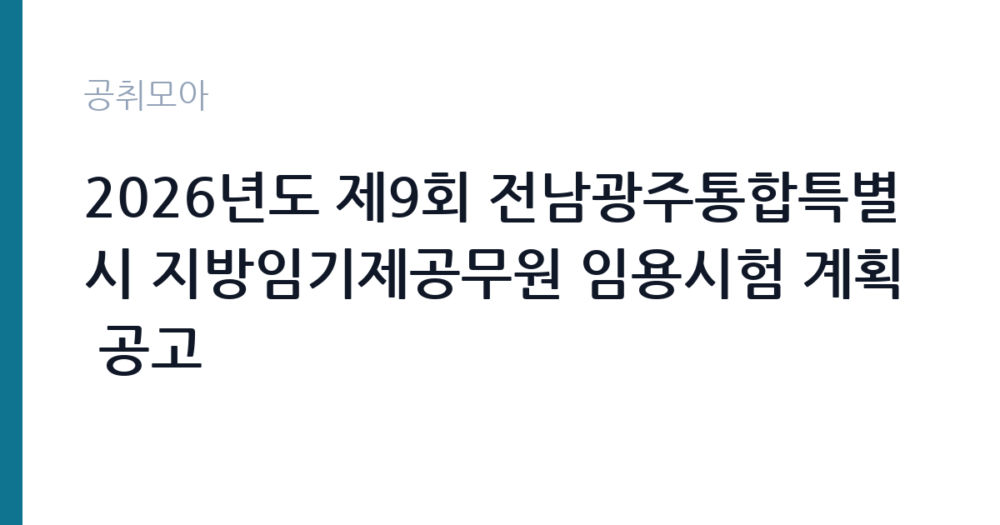

[지자체] 2026년도 제9회 전남광주통합특별시 지방임기제공무원 임용시험 계획 공고
전남광주통합특별시 · 전국 · 마감 2026-11-02 (D-10) · 출처 나라일터

한눈에 보는 모집 조건
| 기관 | 전남광주통합특별시 |
|---|---|
| 공고명 | 2026년도 제9회 전남광주통합특별시 지방임기제공무원 임용시험 계획 공고 |
| 고용형태 | 임기제 |
| 근무지 | 전국 |
| 게시일 | 2026-10-23 |
| 마감일 | 2026-11-02 (D-10) |
지원자격, 이렇게 읽으세요
- 지방시간선택제임기제나급 1명 지방시간선택제임기제다급 1명
- 접수 ~2026-11-02 마감
- 세부 조건은 원문 공고문 확인
모집단위는 지방시간선택제임기제나급 1명, 지방시간선택제임기제다급 1명입니다. 임기제공무원은 공무원 신분이지만 임용 기간이 정해져 있습니다. 전문성이 필요한 업무에 채용되며 임용 기간과 연봉등급이 공고문에 명시됩니다. 임기 중에는 공무원으로서의 복무 규정과 이해충돌 방지 의무가 적용됩니다. 공고문의 자격 항목에는 '공고문 참고'으로 적혀 있으므로 이 문장을 기준으로 본인 해당 여부를 먼저 판단하십시오. 서류 단계에서 요건을 충족하지 못하면 이후 전형을 준비할 기회가 없습니다. 학력·경력·자격 요건을 항목별로 대조해 표시해 두고, 경력은 재직증명서와 경력증명서로 입증해야 합니다. 증명서에 직무 내용이 구체적으로 적혀 있지 않으면 경력으로 인정받지 못하는 경우가 있으니 발급 전에 기재 내용을 확인하십시오. 자격증은 유효 기간과 등록 상태까지 확인해야 하고, 자격 취득 예정자로 지원하려면 공고문에 예정자 허용 조항이 있는지 반드시 봐야 합니다. 동일 직무 경력자와 경쟁하게 되므로, 관련 경험이 있다면 증명서에 업무 내용이 구체적으로 적히도록 요청하십시오.
이 공고의 포인트
이 공고의 첫 번째 포인트는 고용 형태입니다. 임용 기간이 정해져 있지만 공무원 신분으로 복무 규정이 적용되고, 전문성이 인정되면 재임용이나 유사 직위 지원에 도움이 됩니다. 두 번째는 모집단위가 분명하다는 점입니다. 지방시간선택제임기제나급 1명, 지방시간선택제임기제다급 1명 단위로 선발하므로 배치 이후 담당 업무의 범위를 미리 가늠할 수 있습니다. 세 번째는 근무지입니다. 전국 기준으로 근무지가 정해져 있어 통근 시간과 비용을 함께 계산해야 합니다. 접수 기간은 2026-10-29부터 2026-11-02까지로 길지 않아, 공고를 늦게 확인하면 준비 시간이 그대로 줄어듭니다. 모집 인원이 적은 만큼 지원자 한 명 한 명의 서류 완성도가 당락에 크게 작용합니다.
전형은 어떻게 진행되나
선발 절차는 원문 공고문에 단계별로 적혀 있습니다. 1차 서류, 2차 면접의 2단계로 진행되는 구성이 일반적입니다. 서류에서는 자격 요건과 경력 증빙을 확인하고, 면접에서는 실제 업무 수행 능력과 조직 적응을 봅니다. 직무에 따라 필기시험이나 실기, 컴퓨터 활용 시험이 추가되기도 하므로 공고문의 전형표를 먼저 확인하십시오. 단계별로 합격자만 다음 전형에 응시할 수 있고, 단계마다 응시 자격 확인 서류를 다시 제출해야 하는 경우가 있습니다. 최종합격자 발표 후에는 신원조회와 채용 신체검사가 남아 있습니다. 온라인 접수는 마감 시각이 분 단위로 정해지므로 시스템 시간을 기준으로 판단해야 합니다.
원문에서 확인한 전형 방식
전남광주통합특별시제1인사위원회 공고 제2026-61호 2026년도 제9회 전남광주통합특별시 지방임기제공무원 임용시험 계획 공고 2026년도 제9회 전남광주통합특별시 지방임기제공무원 임용시험 계획을 다음과 같이 공고하오니 참신하고 유능한 인재의 많은 응모를 바랍니다. 2026년 10월 23일 전남광주통합특별시제1인사위원회위원장 □ 모집 개요 ○ 임용예정직위 : 지역관광기획(1명), 목공예 전문가(1명) ○ 임용예정직급 및 자격요건 : 공고문 참고 ○ 접수기간 : 2026. 10. 29.(목) ~ 11. 2.(월) ○ 응시방법 : 방문 또는 우편접수 ○ 문의처 : 061-286-3372
이런 분께 추천해요
- 전국에서 출퇴근이 가능한 분
- 지역관광·공예 직무 경험이나 관련 자격을 갖춘 분
- 임기제 조건과 근무 기간을 확인하고 지원할 수 있는 분
지원 전 체크리스트
- 응시자격 요건을 충족하는가 — 경력은 증명서로 입증해야 합니다
- 임용 기간과 연봉등급, 근무 시간 조건을 확인했는가
- 제출서류 목록을 모두 준비했는가 — 누락 시 서류 단계에서 탈락합니다
- 접수 마감 2026-11-02 이전에 접수 방식을 확인해 제출했는가
모집 일정과 제출 타이밍
접수는 2026-10-29에 시작해 2026-11-02에 마감됩니다. 공고 게시일 2026-10-23부터 계산하면 준비 기간은 약 10일입니다. 공고문에 적힌 접수 방법은 '방문 또는 우편접수'이므로, 온라인·방문·우편 중 어느 방식인지에 따라 제출 일정이 달라집니다. 우편 접수는 도착 기준으로 판정되는 경우가 많아 마감일 소인만 믿으면 안 됩니다. 접수 첫날에 몰리면 시스템 접속이 지연될 수 있으므로 오전 시간대 제출이 안전합니다. 근무지 세부 위치와 출퇴근 조건은 공고문에서 확인하는 것이 가장 정확합니다.
직무 이해하기: 지자체
지방자치단체는 지역 행정과 복지, 시설 운영을 담당합니다. 부서별로 사업을 수행하고 결원이나 신규 사업에 따라 임기제와 기간제 인력을 채용합니다. 조례와 자체 인사 규정에 따라 채용 절차가 진행됩니다. 전남광주통합특별시는 지역관광 기획과 목공예 전문가 직위를 임기제로 채용합니다. 관광 콘텐츠 기획과 공예 프로그램 운영이 핵심 업무입니다. 직무 교육은 입사 후 기관 자체 계획에 따라 진행되므로 사전 경험이 없어도 시작할 수 있습니다.
자기소개서 작성 팁
지역관광·공예 지원서는 직무 연관성을 앞세우는 것이 핵심입니다. 첫 문단에 지원 직무와 본인 경험을 한 문장으로 연결하고, 이어서 담당했던 업무의 규모와 결과를 수치로 제시하십시오. 직무 경험이 많지 않다면 경험의 양보다 과정을 구체적으로 쓰는 편이 낫습니다. 어떤 상황에서 무엇을 판단했고 어떤 결과가 나왔는지 순서대로 서술하면 신뢰가 생깁니다. 지원 동기와 기여 방안은 한 문단씩 짧게 유지하고, 가장 자신 있는 경험에 분량을 몰아주십시오. 마지막 문장은 포부보다 구체적인 실행 계획으로 끝내는 것이 좋습니다.
면접 준비 포인트
면접에서는 지역관광·공예 직무를 얼마나 이해하고 있는지, 그리고 전남광주통합특별시의 사업을 어느 정도 알고 있는지 확인합니다. 답변은 상황, 판단, 조치 순서로 정리하면 전달이 분명해집니다. 마지막 질문 시간에는 근무 조건에 대한 확인 사항을 한 가지 정도 준비해 가면 성실성이 드러납니다.
급여·근무조건 읽는 법
임기제공무원은 공무원 신분이지만 임용 기간이 정해져 있고, 보수는 국가공무원 또는 지방공무원 보수규정상 연봉등급제를 적용받습니다. 연봉은 등급별 하한과 상한 범위에서 경력과 직무 난이도를 반영해 책정되며, 여기에 정액급식비·직급보조비·명절휴가비·성과상여금이 별도로 붙습니다. 참고로 2026년 전문경력관 봉급표(공무원보수규정 별표 3의2)는 나군 1호봉 월 2,317,100원, 다군 1호봉 월 2,133,000원 수준이며, 임기제 연봉등급도 이 체계와 유사한 구간에서 결정됩니다. 시간선택제로 임용되면 주당 근무 시간에 비례해 연봉이 산정되므로 전일제 환산액과 실제 지급액을 구분해 읽어야 합니다. 이번 공고 본문에는 연봉·월급 실액이 제시되지 않아 구체적인 금액은 첨부 공고문의 처우 항목에서 확인해야 합니다. 실수령액을 계산하려면 세금과 4대 보험료를 빼야 합니다. 공고문에는 세전 금액만 제시되는 경우가 많으므로, 월 급여에서 약 9% 안팎의 공제가 발생한다고 보고 대략적인 수령액을 가늠하십시오. 부양가족 수와 비과세 항목에 따라 차이가 나므로 정확한 금액은 급여 담당 부서에 문의하는 것이 가장 확실합니다. 수당 항목과 지급 주기도 함께 확인하십시오.
자주 묻는 질문
- 선발 인원과 직급은 어떻게 되나요?
이번 공고의 모집단위는 지방시간선택제임기제나급 1명, 지방시간선택제임기제다급 1명입니다. 직종별 인원과 직급은 공고문 모집분야 항목에 표로 제시되어 있으니 원문에서 확인하십시오. - 근무지는 어디인가요?
전국입니다. 세부 근무지와 출퇴근 조건은 원문 공고문의 근무예정지 항목에서 확인할 수 있습니다. - 보수는 얼마인가요?
임기제 신분에 따라 전남광주통합특별시의 임금 규정 또는 보수규정을 적용받습니다. 본문에 확정 금액이 없으므로 첨부 공고문 처우표에서 기본급과 수당을 나눠 확인하십시오.
함께 보면 좋은 공고
[지자체] 울산광역시 개방형직위 공개 모집(서울본부장) — 마감 2026-11-09[지자체] 2026년 제2회 임실군 공무직근로자 및 출자출연기관 채용 계획공고(사무보조,조리사,환경관리,농기계관리,환경미화원) — 마감 2026-11-04[지자체] 2026년 제7회 의정부시 지방임기제공무원 임용시험 시행계획 공고(교통(버스정책), 북한이탈주민 정착지원) — 마감 2026-10-29출처: 나라일터 공개정보를 바탕으로 공취모아가 정리한 안내글입니다. 모집 조건·일정은 변경될 수 있으니 지원 전 반드시 원문 공고문을 확인하세요. 본 글은 정보 제공용이며 합격을 보장하지 않습니다.